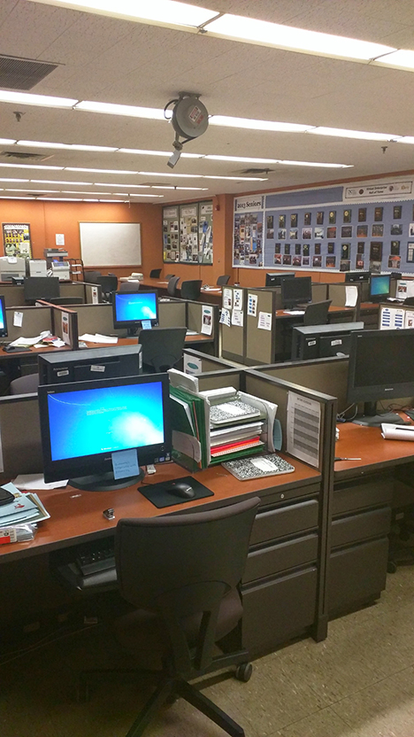

Visiting New Dorp High School
Two weeks ago I had an opportunity to visit New Dorp High School in Staten Island. The purpose of my visit was to speak to the kids about what kinds of careers you can have if you study technology. This was one of my first speaking engagements outside of work related presentations. So I wasn't sure what to expect.
The Tour
During my visit I had an opportunity to get a tour of the school. Unlike most schools (at least when I was growing up) they have curriculums where the students can get accredited college credit for many things. But I'm not talking about one off AP classes, these are full fledged programs, that would be major specific courses such as:
- The Academy of Communication & Media Arts
- The Academy of Fine & Dramatic Arts
- The Institute of Forensic Science
- The Institute of Health Sciences & Culinary Arts
- The Future Teachers Academy
- The Corporate Center for Virtual Enterprise & Software Engineering
- The Institute of Mathematics & Science
- The The Law Institute & AFJROTC Program
Not only that, but the school is designed to mimic the workplace as much as possible. For example they have their own courtroom, where kids can hold trials and defend or prosecute many things

They also have mock offices, where they work to create and run fictitious companies.

With students as leaders of different departments. For example here is the HR team org chart. Below is an example of the companies Human Resources Department.

Aftermath
I came into the school thinking, I would give a talk on how to continue and persevere when it gets tough. But honestly, if you don't want it when you have all of these opportunities, you can't blame the school. I have to admit kids today have a huge advantage in learning technology and getting ready to enter the work place.
During my high school years I had one off programming classes, not an entire curriculum. I never worked in an office until I was in my 2nd semester freshman year, and that is only because of a lucky internship. I hadn't even heard of Python until I was in grad school. But these students in 9th and 10th grade are building tic toe and other applications in Python.
I could barely write "hello world" at that age.